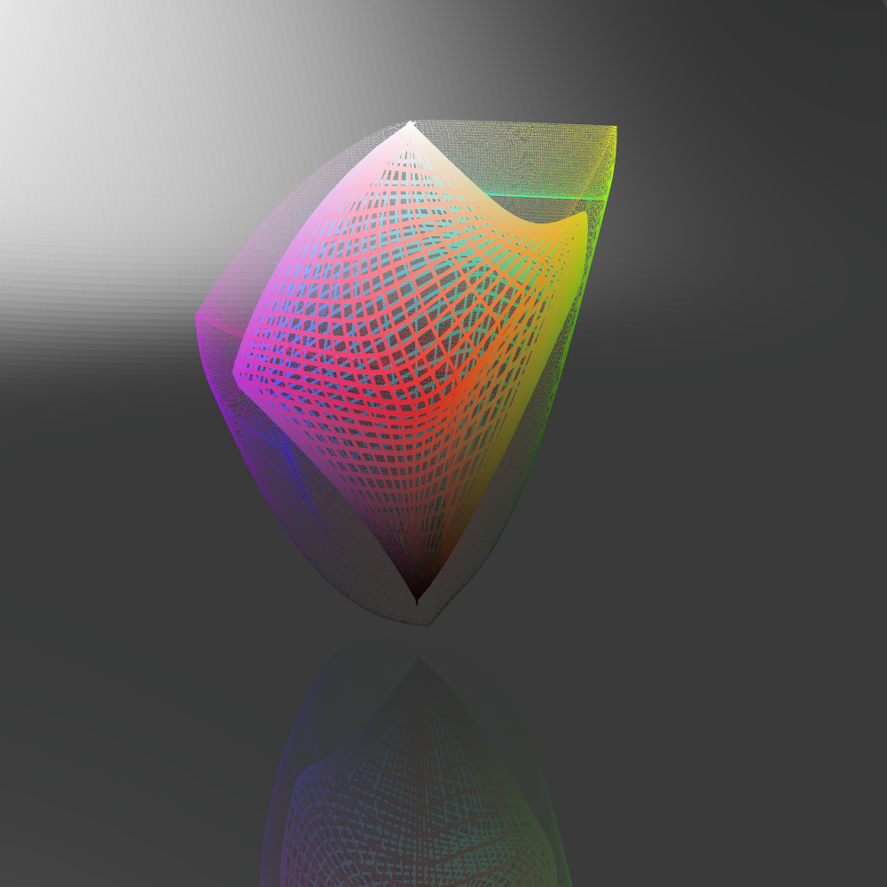
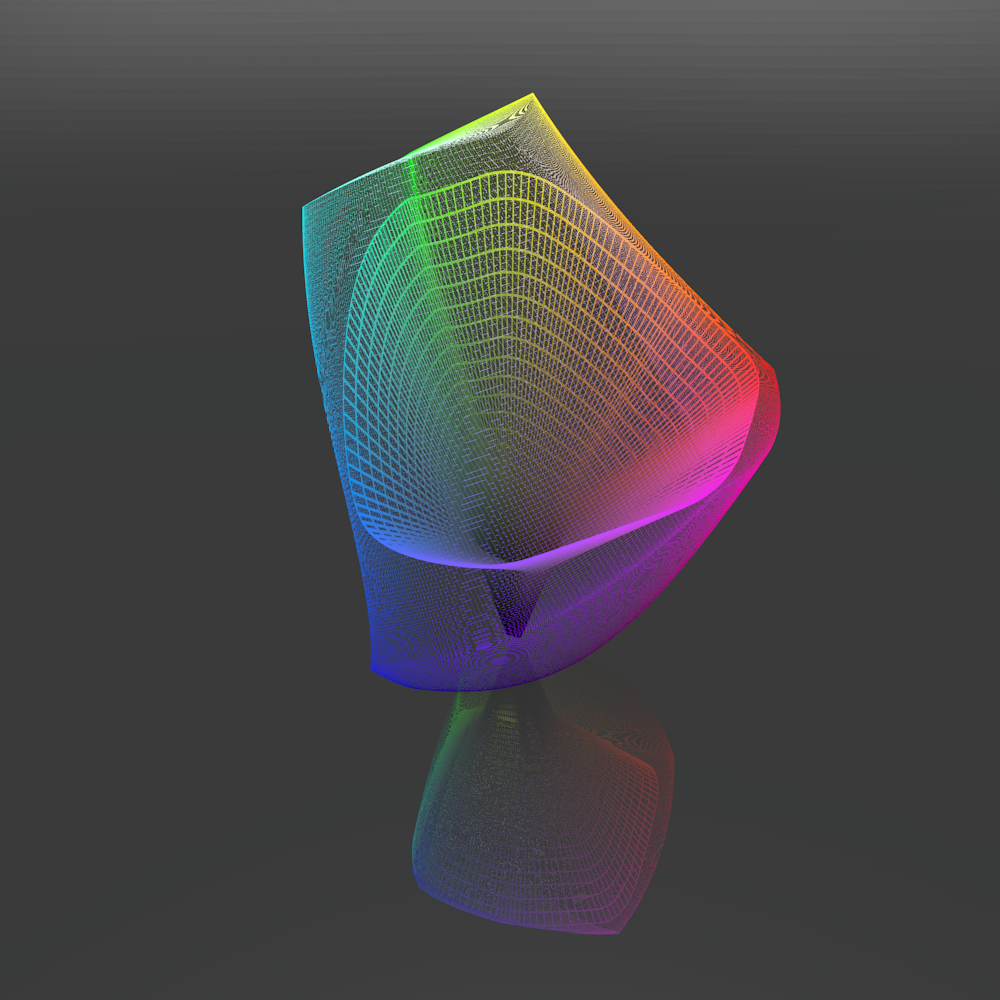
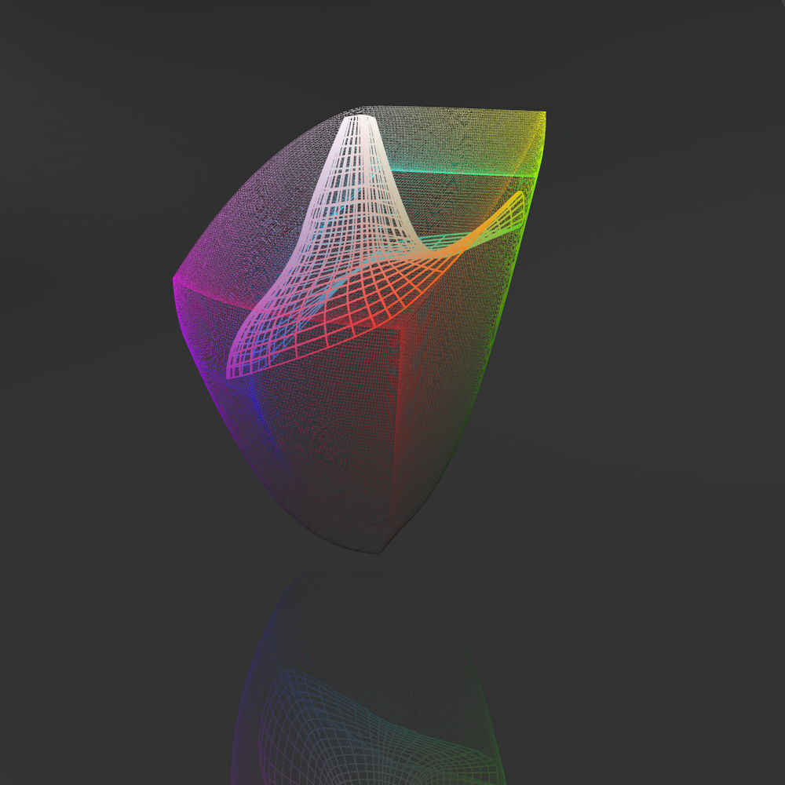
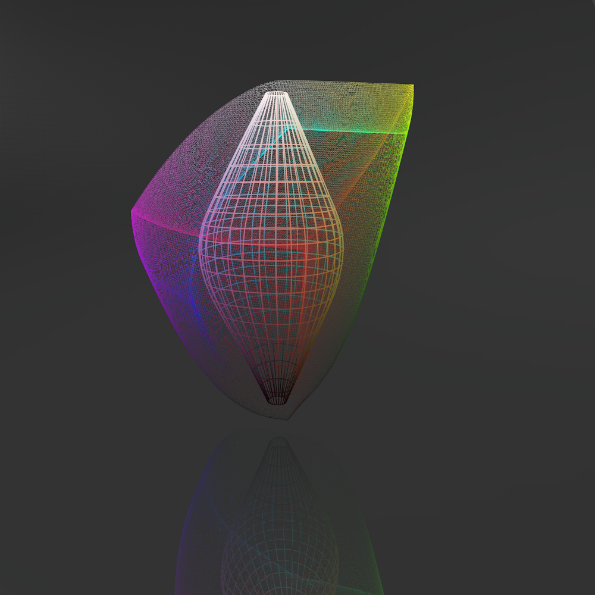
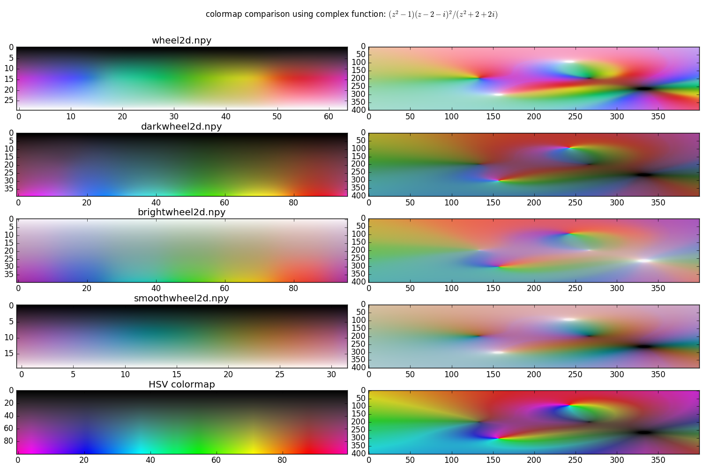
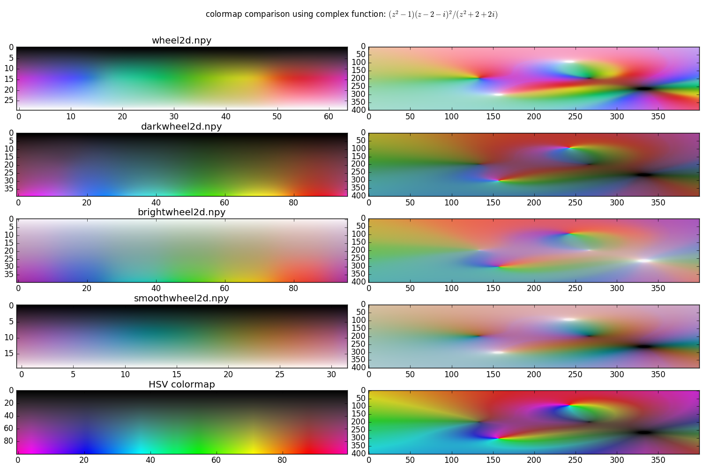

blender colormap builder
Overview
This is a blender script that allows to generate colormaps in the uniform colorspace CAM02-UCS (thank you colorspacious) by drawing a 3d spline path or a 3d spline surface in blender.
Installation
- clone the git repository somewhere on your system:
git clone ... - install a python version that is compatible with blender (e.g. python 3.5.1 for
blender 2.77a) and install the
colorspaciousmodule withpip install colorspacious. This is straightforward with anaconda python: first make a virtual environment withconda create -n blender python=3.5. Then dosource activate blenderto activate the environment and install colorspacious withpip install colorspacious
The colormap.blend project file
- open the project
colormaps.blendwith blender. - click on the different layers (little boxes at the bottom right of the 3d
view windows) and check out the objects that are within each by doing a right
click on the objects. The layers are organized like this:
- layer 1: contains a precomputed Gamut surface and can be used to position a surface or path in the Gamut to compute the colormap
- layer 2: this is the render layer. Computed and colored meshes can be put here for advanced visualizations
- layer 3: this is the dump layer for lots of different spline surfaces and paths that are ready to be taken to layer 1 for colormap computation
- layer 4: this is the dump layer for modified, and colored non-spline surfaces or paths.
Instructions, Gamut surface sript
- in the python script
Add_Gamut(can be selected on in the footline of the text window on the right), change the path to point to your colorspacious module. E.g.:sys.path.append('home/myname/anaconda2/envs/blender/lib/python3.5/site-packages'') - run the script with
alt + pwhen the text window is active or click therun scriptbutton in the footline of the text editor window. A new Gamut surface is generated. You can modify the resolution of the Gamut cube in the script.
Instructions, path to colormap script
- in the python script
path_to_colormap(can be selected on in the footline of the text window on the right), change the path to point to your colorspacious module. E.g.:sys.path.append('home/myname/anaconda2/envs/blender/lib/python3.5/site-packages'') - you can now add and edit the control points of bezier curves in the 3d window.
If you are done positioning your curve,
make sure that it is selected and run the python script by pushing on
run scriptor pressingalt + pwhen the script window is active. The colormap on the bottom left should now update.
Instructions, nurbs surface to colormap script
- in the python script
nurbs_to_colormap, change the path to point to your colorspacious module. E.g.:sys.path.append('home/myname/anaconda2/envs/blender/lib/python3.5/site-packages'') - you can now add and edit the control points of nurbs surfaces in the 3d window. The u and v resolution parameters control the axial and angular sampling of the cylinder and can be reduced while editing. The spline order controls the smoothness of the surface.
- If you are done positioning the surface,
make sure that it is selected and run the python script by pushing on
run scriptor pressingalt + pwhen the script window is active. Be careful, the script generates a duplicate of the nurbs surface that you can delete after the colormap has been generated. The colormap on the bottom left should now update. There is a parameter in the script to transpose the colormaps and a commented line to save it as a npy file.
Gallery:


included colormaps
Colorsurfaces need to make a few compromises To use the maximum extend of the Gamut colorspace while at the same time remaining as smooth as possible. Especially at convergent points around black (zero lightness) and white (max lightness), the topology of the color surfaces has to be as smooth as possible, meaning the lightness of different hues should vary as little as possible. This ensures that maximum and minimums in displayed functions remain round and don't become star-shaped or shifted towards darker colors like blue and red. At 0.5, the color surfaces can vary a in lightness to make use of strongy saturated colors.
rendering:
Wheel2d is a 2d colormap that goes from black to white with maximum saturated colors around 0.5. 
Darkwheel2d is a 2d colormap that goes from black to light and saturated colors. Exclusion of white allows for better coverage of the saturated corners of the Gamut cube. 
Brightwheel2d the equivalent of Darkwheel starting from white instead of black. I have chosen slightly harder transitions between the six colors in this colormap. 
Smoothwheel2d is the equivalent of wheel2d with even lightness and even angular variations. The colors are smoother and less saturated but lightness is much easier to identify because we don't need to adapt lightness to the hue value 
comparison with:
 
